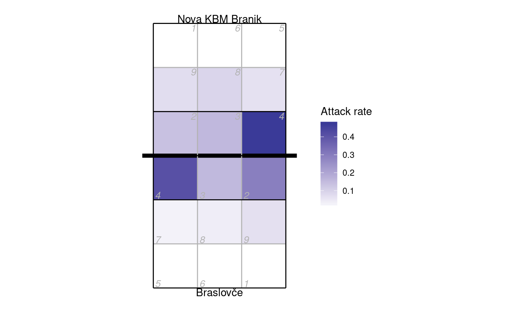
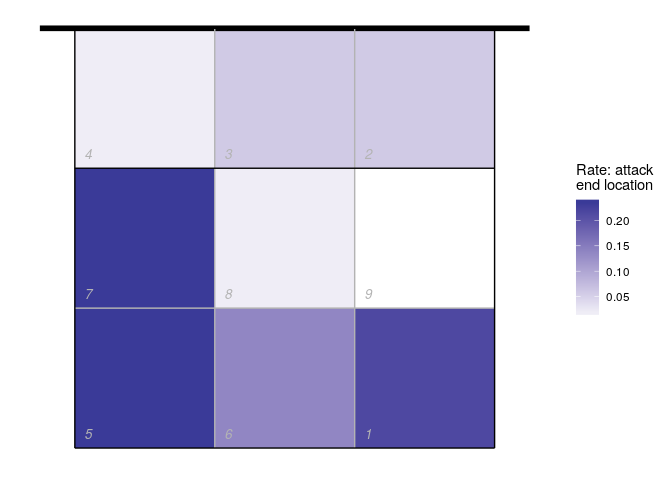
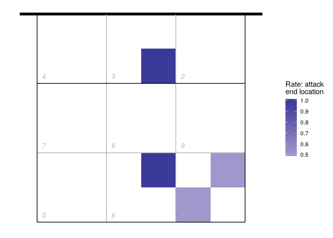
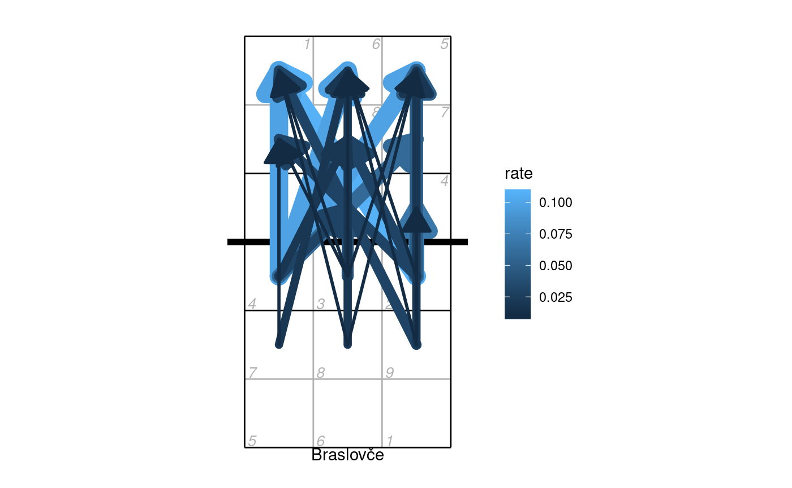
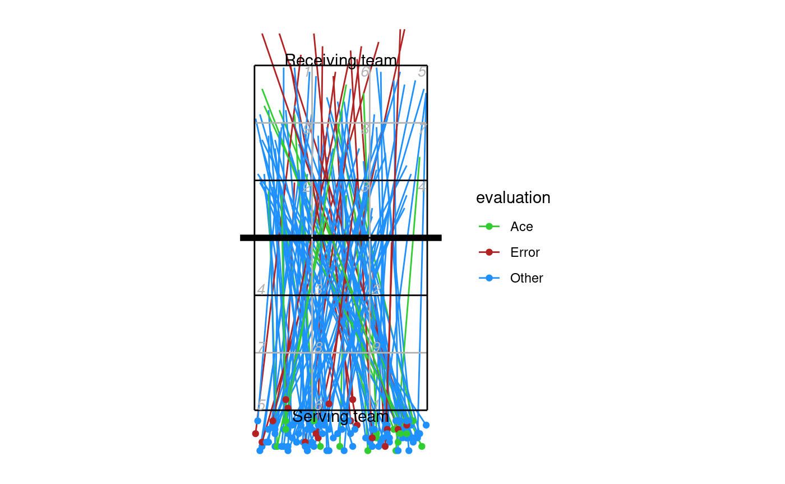
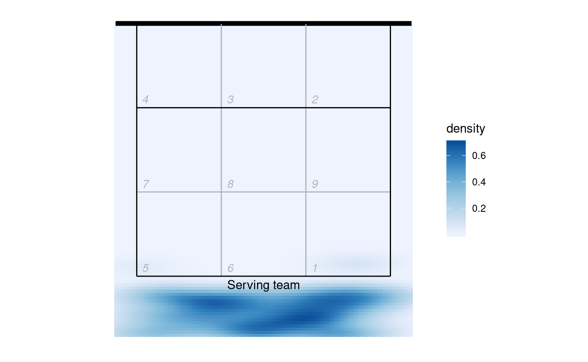

An R package for reading DataVolley scouting files.
See also this DataVolley file validator, which is built on the datavolley package.
Example
Read one of the example data files bundled with the package:
library(datavolley)
x <- read_dv(dv_example_file(), insert_technical_timeouts=FALSE)
summary(x)
#> Match summary:
#> Date: 2015-01-25
#> League: Finale mladinke
#> Teams: Braslovče (JERONČIČ ZORAN/MIHALINEC DAMIJANA)
#> vs
#> Nova KBM Branik (HAFNER MATJAŽ/)
#> Result: 3-0 (25-16, 25-14, 25-22)
#> Duration: 67 minutesNumber of serves by team:
serve_idx <- find_serves(plays(x))
table(plays(x)$team[serve_idx])
#>
#> Braslovče Nova KBM Branik
#> 74 54Distribution of serve run lengths:
serve_run_info <- find_runs(plays(x)[serve_idx,])
table(unique(serve_run_info[,c("run_id","run_length")])$run_length)
#>
#> 1 2 3 4 5 7 8
#> 34 16 7 4 1 1 1The court position associated with each action can be recorded in two ways. The most common is by zones (numbered 1-9).
Heatmap of attack rate by court zone (where the attack was made from):
library(ggplot2)
#> Registered S3 methods overwritten by 'ggplot2':
#> method from
#> [.quosures rlang
#> c.quosures rlang
#> print.quosures rlang
library(dplyr)
#>
#> Attaching package: 'dplyr'
#> The following objects are masked from 'package:stats':
#>
#> filter, lag
#> The following objects are masked from 'package:base':
#>
#> intersect, setdiff, setequal, union
## calculate attack frequency by zone, per team
attack_rate <- plays(x) %>% dplyr::filter(skill == "Attack") %>%
group_by(team, start_zone) %>% dplyr::summarize(n_attacks=n()) %>%
mutate(rate=n_attacks/sum(n_attacks)) %>% ungroup
## add x,y coordinates associated with the zones
attack_rate <- cbind(attack_rate, dv_xy(attack_rate$start_zone, end="lower"))
## for team 2, these need to be on the top half of the diagram
tm2i <- attack_rate$team==teams(x)[2]
attack_rate[tm2i, c("x", "y")] <- dv_flip_xy(attack_rate[tm2i, c("x", "y")])
ggplot(attack_rate, aes(x, y, fill=rate)) + geom_tile() + ggcourt(labels=teams(x)) +
scale_fill_gradient2(name="Attack rate")
Heatmap of where attacks ended, using only attacks by Nova KBM Branik from position 4:
## calculate attack frequency by zone, per team
attack_rate <- plays(x) %>%
dplyr::filter(team == "Nova KBM Branik" & skill == "Attack" & start_zone == 4) %>%
group_by(end_zone) %>% dplyr::summarize(n_attacks=n()) %>%
mutate(rate=n_attacks/sum(n_attacks)) %>% ungroup
attack_rate <- cbind(attack_rate, dv_xy(attack_rate$end_zone, end="lower"))
ggplot(attack_rate, aes(x, y, fill=rate)) + geom_tile() + ggcourt("lower", labels = NULL) +
scale_fill_gradient2(name="Rate: attack\nend location")
#> Warning: Removed 1 rows containing missing values (geom_tile).
We can also use the end subzone information, if it has been recorded. The subzones divide each zone into four, so we get higher spatial resolution (but the subzone is not always scouted). The same plot as above, but using subzones:
attack_rate <- plays(x) %>%
dplyr::filter(team != "Nova KBM Branik" & skill == "Attack" & start_zone == 4 & !is.na(end_subzone)) %>%
group_by(end_zone, end_subzone) %>% dplyr::summarize(n_attacks=n()) %>%
mutate(rate=n_attacks/sum(n_attacks)) %>% ungroup
attack_rate <- cbind(attack_rate, dv_xy(attack_rate$end_zone, end="lower", subzones = attack_rate$end_subzone))
ggplot(attack_rate, aes(x, y, fill=rate)) + geom_tile() + ggcourt("lower", labels = NULL) +
scale_fill_gradient2(name="Rate: attack\nend location")
Or using arrows to show the starting and ending zones of attacks:
## first tabulate attacks by starting and ending zone
attack_rate <- plays(x) %>% dplyr::filter(team==teams(x)[1] & skill=="Attack") %>%
group_by(start_zone, end_zone) %>% tally() %>% ungroup
## convert counts to rates
attack_rate$rate <- attack_rate$n/sum(attack_rate$n)
## discard zones with zero attacks or missing location information
attack_rate <- attack_rate %>% dplyr::filter(rate>0 & !is.na(start_zone) & !is.na(end_zone))
## add starting x,y coordinates
attack_rate <- cbind(attack_rate, dv_xy(attack_rate$start_zone, end="lower", xynames=c("sx","sy")))
## and ending x,y coordinates
attack_rate <- cbind(attack_rate, dv_xy(attack_rate$end_zone, end="upper", xynames=c("ex","ey")))
## plot in reverse order so largest arrows are on the bottom
attack_rate <- attack_rate %>% dplyr::arrange(desc(rate))
p <- ggplot(attack_rate,aes(x,y,col=rate)) + ggcourt(labels=c(teams(x)[1],""))
for (n in 1:nrow(attack_rate))
p <- p + geom_path(data=data.frame(x=c(attack_rate$sx[n], attack_rate$ex[n]),
y=c(attack_rate$sy[n],attack_rate$ey[n]),
rate=attack_rate$rate[n]),
aes(size=rate), lineend="round", arrow=arrow(ends="last", type="closed"))
p + scale_fill_gradient(name="Attack rate") + guides(size="none")
The second source of position data is court coordinates. These are not included in all data files, because generally they must be manually entered by the scout and this can be a time consuming process. For the purposes of demonstration, here we generate fake coordinate data:
## take just the serves from the play-by-play data
xserves <- subset(plays(x), skill=="Serve")
## if the file had been scouted with coordinate included, we could plot them directly
## this file has no coordinates, so we'll fake some up for demo purposes
coords <- dv_fake_coordinates("serve", xserves$evaluation)
xserves[, c("start_coordinate", "start_coordinate_x", "start_coordinate_y",
"end_coordinate", "end_coordinate_x", "end_coordinate_y")] <- coords
## now we can plot these
xserves$evaluation[!xserves$evaluation %in% c("Ace", "Error")] <- "Other"
ggplot(xserves, aes(start_coordinate_x, start_coordinate_y,
xend=end_coordinate_x, yend=end_coordinate_y, colour=evaluation))+
geom_segment() + geom_point() +
scale_colour_manual(values=c(Ace="limegreen", Error="firebrick", Other="dodgerblue")) +
ggcourt(labels=c("Serving team", "Receiving team"))
We could also use these coordinates to generate a heatmap-style plot of serve location:
ggplot(xserves, aes(start_coordinate_x, start_coordinate_y))+
stat_density_2d(geom="raster", aes(fill=..density..), contour=FALSE)+
scale_fill_distiller(palette=1, direction=1)+
ggcourt("lower", labels="Serving team")
Troubleshooting
If you see unexpected behaviour, try read_dv(...,do_warn=TRUE) to obtain more diagnostic information during the process of reading and parsing the DataVolley file. Also check the text encoding specified to read_dv (did you specify one??)
More
For more information about DataVolley, see http://www.dataproject.com/IT/en/Volleyball.